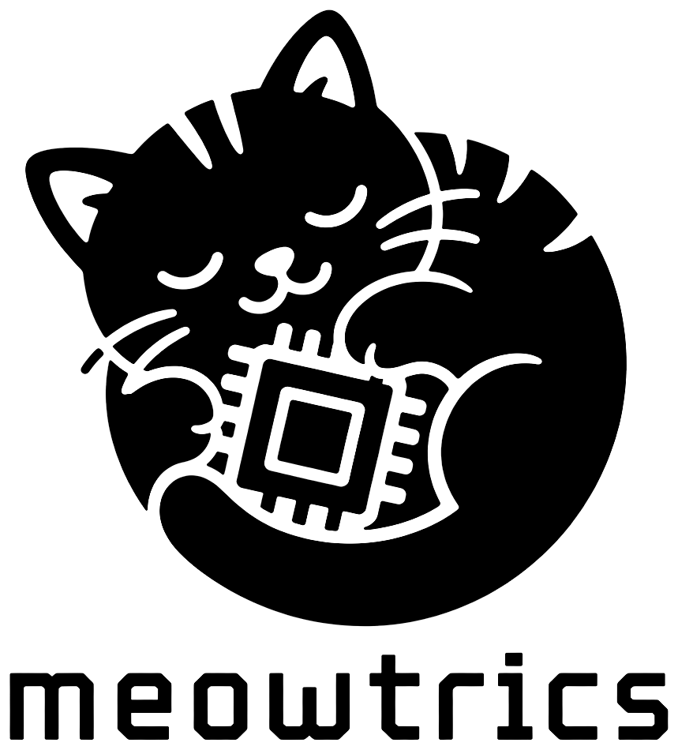
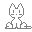

ra-yavuz › meowtrics

meowtrics
A small animated emoji that lives in your system tray and gossips about your machine. Cat-shaped by default, sweats when the CPU is hot, naps when you're idle. Hover reveals a one-line take on what's going on.

Quick install
One command. Detects your distro and picks the best available path.
curl -fsSL https://ra-yavuz.github.io/meowtrics/get.sh | sudo bash
Prints the disclaimer and asks for consent before doing anything. Set
MEOWTRICS_YES=1 to skip the prompt for unattended installs.
Other install paths (manual apt setup, single .deb, from
source) appear further down.
What it does
A tiny daemon reads your system's vital signs from the kernel
(/proc, /sys, no root needed), runs each through
a debounced state machine, and renders a small animated emoji in your
system tray that reflects the most interesting state at any given moment.
Hover and a one-line message tells you what it thinks is going on.
On KDE Plasma 6 it ships as a native plasmoid with a richer popup. On other desktops (GNOME with AppIndicator, XFCE, Cinnamon, Budgie, MATE, LXQt) it shows up as a StatusNotifierItem tray icon. On tiling window managers (Sway, Hyprland, i3, bspwm) it can be consumed as a custom module by waybar, polybar, or i3blocks.
Sensors (planned for v0.1 .. v0.2)
| Sensor | Source | Example states |
|---|---|---|
| CPU load | /proc/stat | idle 😺 / busy 😼 / pegged 🥵 |
| RAM | /proc/meminfo | fine / high / critical |
| Swap | /proc/meminfo | none / thrashing 💀 |
| Thermal | /sys/class/thermal | cool 🥶 / warm / hot 🥵 / throttling 🐌🔥 |
| Fan | /sys/class/hwmon | off / spinning 🌀 / max |
| Battery | /sys/class/power_supply | charging 🔌 / discharging / low 🪫 / full 🔋 |
| Disk usage | statvfs | fine / filling 🤰 / nearly full ⚠️ |
| Disk IO | /proc/diskstats | idle 😴 / busy / grinding 🐢 |
| Network | /proc/net/dev | idle / active / saturated 📡 |
| GPU | /sys/class/drm, nvidia-smi | idle / busy / hot 🔥 |
| Brightness | /sys/class/backlight | dark 🌙 / bright ☀️ |
| Webcam / mic | pactl, /proc/*/fd | idle / in use 👀 🎤 |
| Idle / time | D-Bus, /proc/uptime | active / away 😴 / 2am 🦉 |
Messages
Each sensor state has a set of emoji and a weighted bag of message
templates. The widget picks one per tick. Templates use placeholders like
{value} and {duration}. The database is plain
JSON, hand-editable, and the widget loads three layers in order:
- bundled defaults at
/usr/share/meowtrics/messages.json - daily auto-refresh from this site (
messages.json) - your overrides at
~/.config/meowtrics/messages.json
Contributions to the message bank are welcome via pull request to data/messages.json. More cats, funnier lines, more nuanced states.
Install via apt repository
Add the
ra-yavuz apt repository
and install with apt. Auto-updates via apt upgrade.
sudo install -m 0755 -d /etc/apt/keyrings
curl -fsSL https://ra-yavuz.github.io/apt/pubkey.gpg \
| sudo tee /etc/apt/keyrings/ra-yavuz.gpg > /dev/null
echo "deb [signed-by=/etc/apt/keyrings/ra-yavuz.gpg] https://ra-yavuz.github.io/apt stable main" \
| sudo tee /etc/apt/sources.list.d/ra-yavuz.list
sudo apt update
sudo apt install meowtrics
systemctl --user enable --now meowtricsInstall single .deb from GitHub Releases
Grab the latest .deb directly. No automatic updates.
wget https://github.com/ra-yavuz/meowtrics/releases/latest/download/meowtrics_0.1.0-1_amd64.deb
sudo apt install ./meowtrics_0.1.0-1_amd64.deb
systemctl --user enable --now meowtricsInstall from source
Any distro with Rust 1.75+ and systemd:
git clone https://github.com/ra-yavuz/meowtrics.git
cd meowtrics
make
sudo make install
systemctl --user enable --now meowtricsKDE Plasma 6 widget
The package ships the plasmoid alongside the daemon. After install, right-click your panel, Add Widgets, search for meowtrics. The widget shows the active emoji at panel size and opens a richer popup on click with per-sensor breakdowns and prose messages.
tiling-WM (waybar / polybar / i3blocks)
The daemon's meowtrics json output is line-delimited JSON
suitable as a custom module. Example waybar snippet:
"custom/meowtrics": {
"exec": "meowtrics json",
"interval": 5,
"return-type": "json",
"tooltip": true
}Disclaimer / no warranty
/proc and /sys and
renders a tray icon. It does not modify hardware state, but it is provided
as is, without warranty of any kind, express or implied.
The author is not liable for any damage to hardware, data, or system,
however caused. Sensor interpretations are heuristic and may be wrong on
your hardware. Do not rely on this widget for any decision that
matters. Messages displayed by this widget are jokes; do not
interpret them as authoritative system advice. By installing or running
this software you accept full responsibility. Full text:
repo README,
license: MIT.
Licensing of bundled emoji packs
The default install ships no bundled glyph assets: the tray icon is rendered from Unicode codepoints using your system's emoji font. Optional companion packs (Volpeon's Blobcat, OpenMoji, Fluentui Emoji, Twemoji) ship as separate packages, each with their own license file and attribution. Full policy: LICENSING.md.